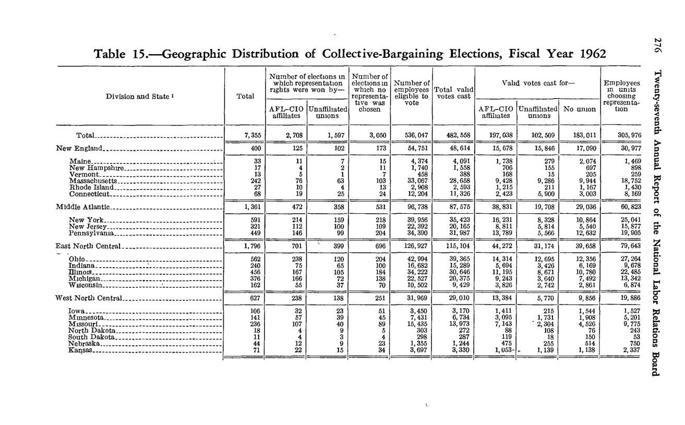
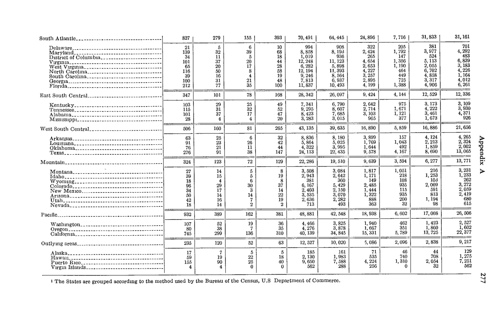

Home › FY1962 › Geographic distribution of collective bargaining elections, eligible voters, and valid votes cast
Stitched from 2 consecutive pages (spans pp. 290–291). Combined rows under the first part’s headers; source images for every part are shown below. component ids
| Division and State | Total elections | Number of elections in which representation rights were won by — AFL-CIO affiliates | Number of elections in which representation rights were won by — Unaffiliated unions | Number of elections in which no representative was chosen | Number of employees eligible to vote | Total valid votes cast | Valid votes cast for — AFL-CIO affiliates | Valid votes cast for — Unaffiliated unions | Valid votes cast for — No union | Employees in units choosing representation |
|---|---|---|---|---|---|---|---|---|---|---|
| Total | 7,355 | 2,708 | 1,597 | 3,050 | 536,047 | 482,558 | 197,038 | 102,509 | 183,011 | 305,976 |
| New England — total | 400 | 125 | 102 | 173 | 54,751 | 45,614 | 15,678 | 15,846 | 17,090 | 30,977 |
| Middle Atlantic — total | 1,361 | 472 | 358 | 531 | 90,738 | 87,073 | 38,831 | 19,708 | 29,036 | 60,823 |
| East North Central — total | 1,796 | 703 | 238 | 855 | 115,104 | 115,104 | 44,272 | 21,174 | 39,658 | 70,443 |
| West North Central — total | 627 | 238 | 138 | 251 | 31,909 | 29,010 | 13,384 | 5,710 | 9,856 | 19,886 |
| [Additional Division rows below — South Atlantic, East South Central, West South Central, Mountain, Pacific, Outlying areas — captured at top-level only on continuation page] | ||||||||||
| South Atlantic — total | 827 | 279 | 155 | 393 | 70,491 | 64,445 | 24,996 | 7,716 | 31,833 | 37,161 |
| East South Central — total | 347 | 101 | 78 | 168 | 28,342 | 26,097 | 9,424 | 4,144 | 12,529 | 12,328 |
| West South Central — total | 506 | 160 | 81 | 265 | 43,135 | 39,635 | 16,830 | 5,659 | 16,886 | 21,636 |
| Mountain — total | 324 | 123 | 72 | 129 | 22,286 | 19,510 | 9,689 | 3,394 | 6,277 | 13,772 |
| Pacific — total | 932 | 389 | 162 | 381 | 48,851 | 42,945 | 18,938 | 6,002 | 17,008 | 26,506 |
| Outlying areas — total | 235 | 120 | 32 | 83 | 12,250 | 10,940 | 5,696 | 2,028 | 3,216 | 9,217 |


Source data: U.S. NLRB Annual Reports (public domain). Reconstruction by NLRB Stats Archive. Verify figures against the source scan. Updated June 2026. · About